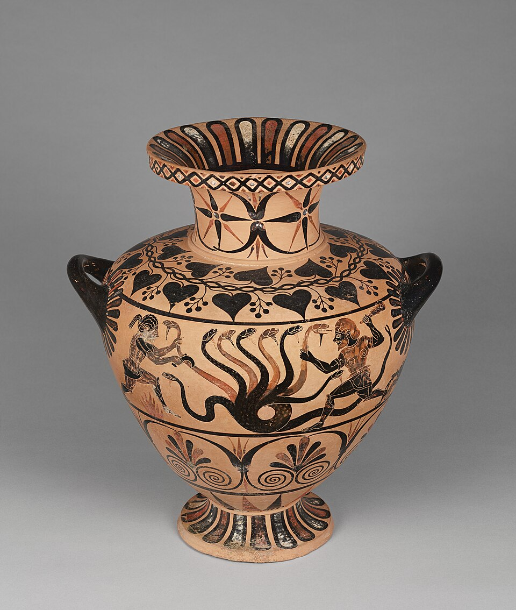
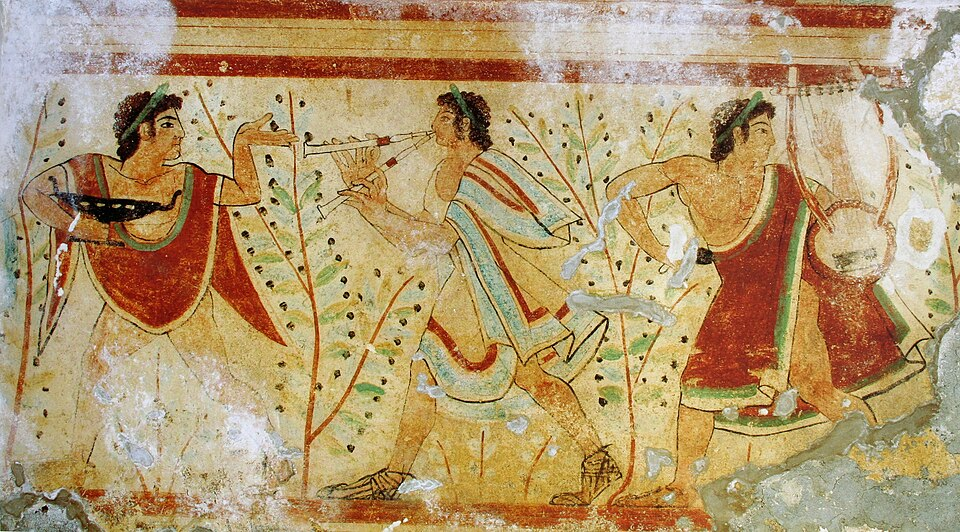
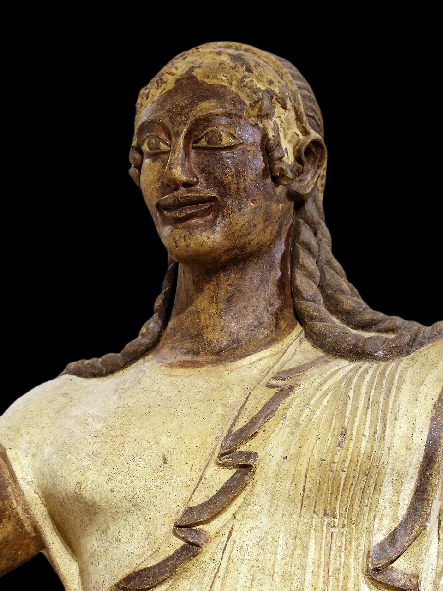
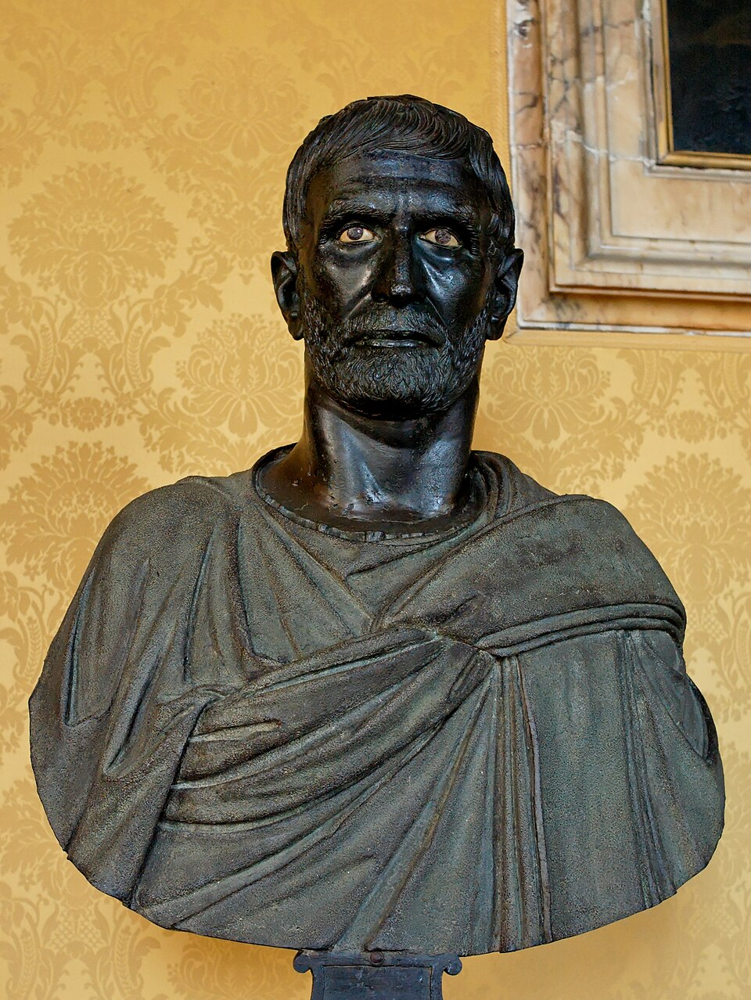
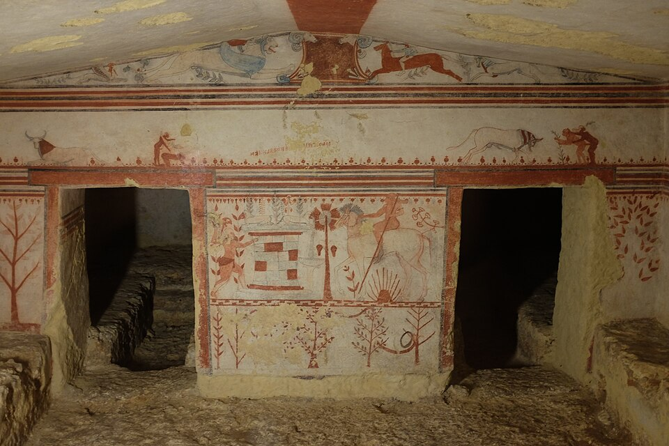
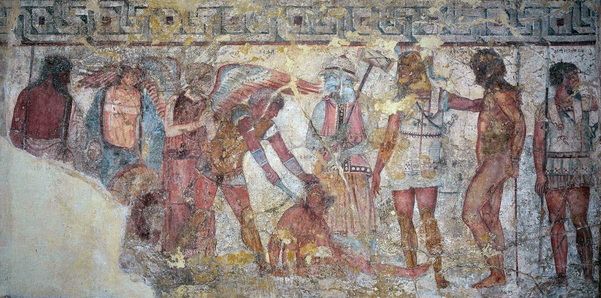
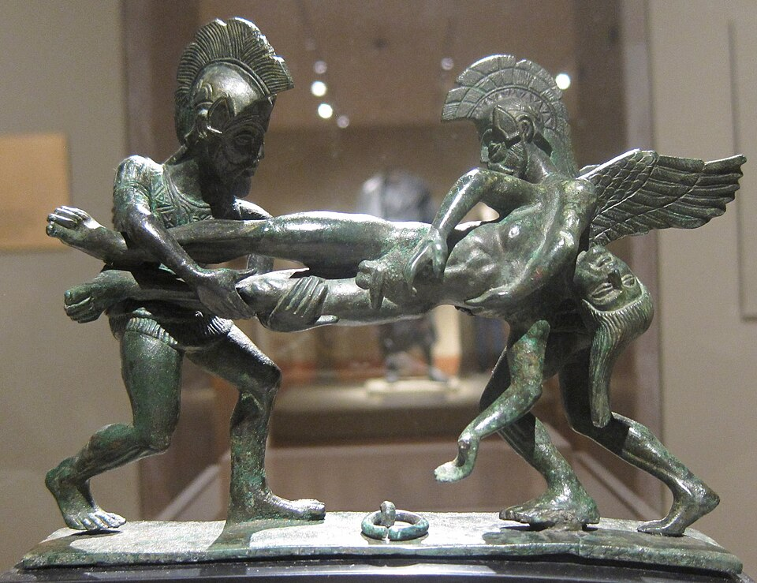
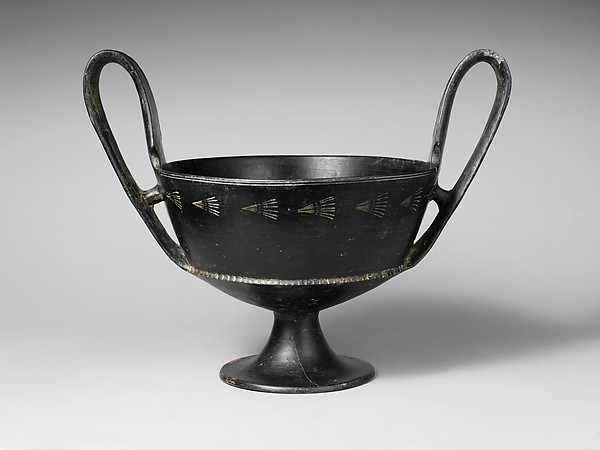

図解：エトルリアの美術
エトルリア美術の成り立ち
- ローマ以前

交易で栄えた民族鉱物資源に恵まれる
ギリシャと盛んに交易 - 前6〜5世紀

墓に来世の宴を描く踊りや笛の明るい壁画
死後も宴会ができるよう - 前6世紀後半

 ギリシャ風の独自の像つり上がった目
ギリシャ風の独自の像つり上がった目
粘土のテラコッタで制作 - 前4〜3世紀

写実的な青銅の肖像ヘレニズムの影響を受ける
ギリシャ美術と何が違うか
エトルリア人と墓の美術
イタリア中部のエトルリア人
動画 0:35～エトルリア人は、ローマが支配する以前にイタリア中部を支配していた民族です。この地域には鉄、銅、鉛、銀などの鉱物資源があり、古くから交易が活発でした。ギリシャとの交易も盛んだったようで、その影響を受けながら独自の美術を発展させました。エトルリア美術は、ギリシャ美術と同様に、その後のローマ美術にも影響を与えました。
墓の壁画と来世の宴会
動画 0:58～エトルリア美術の特色として、現世的・享楽的な表現が挙げられます。墓の壁画にも、踊ったり笛を吹いたりする姿が描かれ、死を憂えている様子はあまり感じられません。同じ死後の世界を描いたエジプト美術では、神々も一緒に描かれました。これに対し、エトルリアでは宴会など、現実にある場面を表現しています。

《豹の墓の側壁画《踊り手と楽師》》
- 作者
- 作者不詳
- 制作時期
- 紀元前5世紀前半（紀元前475年頃）
- 所在地・所蔵
- タルクィニア、モンテロッツィ墓地、豹の墓
- 素材・形式
- 壁画
出典・画像について
神話の場面を描いたと考えられる壁画も見つかっており、雄牛の墓やフランソワの墓がその例です。ただし、これらは例外的なケースとされます。エトルリア人がどのような民族だったのかは、言語が完全には解明されていないこともあり、よく分かっていません。文字は西方ギリシャ文字に近いとされ、解明は進んでいるものの、完全な解明には至っていません。美術品は、彼らの慣習を知る重要な手がかりとなっています。


画像を拡大 ＋《雄牛の墓の奥壁画（雄牛と二人の男性）》
- 作者
- 作者不詳
- 制作時期
- 紀元前6世紀後半（紀元前530年頃）
- 所在地・所蔵
- タルクィニア、モンテロッツィ墓地、雄牛の墓
- 素材・形式
- 壁画
出典・画像について


画像を拡大 ＋《フランソワの墓《アキレウスによるトロイア人捕虜の犠牲》》
- 作者
- 作者不詳
- 制作時期
- 紀元前4世紀後半（紀元前350～330年頃）
- 所在地・所蔵
- 原壁画：ローマ、ヴィッラ・アルバーニ、トルローニア・コレクション／出土地：ヴルチ
- 素材・形式
- 壁画
出典・画像について
ヴルチのフランソワの墓の壁画《アキレウスによるトロイア人捕虜の犠牲》の写真。
画像出典：Askelladd / Wikimedia Commons
CC0
作品情報：画像出典・利用条件
制作メモ
動画98秒の画面（盾の人物、跪く捕虜を斬る中央の男性）と同じ場面で、画面の範囲は一部異なる。
ほとんどの地下墳墓の明るい表現からは、エトルリア人の来世に対する陽気な考え方がうかがえます。彼らは来世があると信じ、死後の世界でも宴会ができるように、このような表現をしたとされます。
彫刻と素材
ギリシャの影響と独自の彫刻
動画 2:10～彫刻にも、古代ギリシャの影響を受けたような作品が残っています。アルカイック・スマイルが見られる一方、完全な模倣ではありません。つり上がった目は、ギリシャ美術にはない独特な表現です。筋肉の表現にはどこかぎこちなさがあり、ギリシャほど肉体美に対する信仰がなかったためかもしれません。人体も、どちらかというと引き伸ばされたように表されています。

《ヴェイのアポロ》
- 作者
- 作者不詳（ウルカへの帰属説あり）
- 制作時期
- 紀元前510～500年頃
- 所在地・所蔵
- 国立エトルリア博物館ヴィラ・ジュリア、ローマ
- 素材・形式
- テラコッタ
出典・画像について
《夫婦の棺》には、臥台に横たわる夫婦が表現されています。厳密には棺ではなく、遺骨を収める蔵骨器とされます。この作品も墓から出土しており、死後も夫婦で宴会ができるように作られたのでしょう。女性が宴会に参加できなかったギリシャとの、文化の違いもうかがえます。
画像を拡大 ＋
《夫婦の棺（ヴィラ・ジュリア所蔵）》
- 作者
- 作者不詳
- 制作時期
- 紀元前530～520年頃
- 所在地・所蔵
- 国立エトルリア博物館ヴィラ・ジュリア、ローマ
- 素材・形式
- テラコッタ
出典・画像について
テラコッタと石材の疑問
動画 2:59～エトルリア人は、大理石ではなく、粘土を用いた素焼きの像、テラコッタを作ることに優れていました。「テラ」は土、「コッタ」は焼いたという意味で、テラコッタは「焼いた土」を意味します。
焼いた土より大理石のほうが耐久性に優れているように思えますが、石材をあまり使わなかった理由は明確ではありません。メソポタミア文明では、岩盤に乏しかったため、石材ではなく日干しレンガで建物を作ったという背景がありました。エトルリアについても、大理石などの良質な石材が取れなかったとする資料がある一方、Wikipediaには、大理石で有名なカッラーラ地方を管理していたにもかかわらず、石の彫刻が少なかったという記述があります。石材がなかったから作らなかったのか、あっても作らなかったのかは、はっきりしません。
壺など、絵が描かれた陶器にも、テラコッタ製のものが多いとされます。

《カエレのヒュドリア《ヘラクレスとイオラオスによるヒュドラ退治》》
- 作者
- 作者不詳（鷲の画家に帰属）
- 制作時期
- 紀元前520～510年頃
- 所在地・所蔵
- J・ポール・ゲティ美術館、ゲティ・ヴィラ、収蔵番号83.AE.346
- 素材・形式
- テラコッタ
出典・画像について
青銅の加工と写実的な肖像
動画 3:51～テラコッタ以外では、青銅製の作品も残っています。エトルリア人はその加工技術にも優れ、後世にも評価される作品を残しました。


画像を拡大 ＋《眠りと死がサルペドンを運ぶキスタの把手》
- 作者
- 作者不詳（エトルリア）
- 制作時期
- 紀元前400～380年頃
- 所在地・所蔵
- クリーヴランド美術館、収蔵番号1945.13
- 素材・形式
- 青銅
出典・画像について
作品情報：作品・画像・利用条件
ヘレニズムの影響を受けた写実的な作品もあります。《ブルータス像》は、ルキウス・ユニウス・ブルータスの肖像とされます。「ブルータス、お前もか」で知られる人物とは別人で、こちらのブルータスは、紀元前509年に当時の王を追放し、共和制を樹立した人物です。

《カピトリーノのブルータス》
- 作者
- 作者不詳
- 制作時期
- 紀元前4～3世紀頃
- 所在地・所蔵
- カピトリーノ美術館、パラッツォ・デイ・コンセルヴァトーリ、収蔵番号MC1183
- 素材・形式
- 青銅
出典・画像について
黒く輝くブッケロ陶器
動画 4:21～工芸品では、ブッケロ陶器が知られています。テラコッタと同じく粘土で作られますが、茶色ではなく黒い色をしています。この黒色は、塗料を塗って生み出すものではありません。


画像を拡大 ＋《テラコッタ製カンタロス（ブッケロ・ソッティーレ）》
- 作者
- 作者不詳（エトルリア）
- 制作時期
- 紀元前650～600年頃
- 所在地・所蔵
- メトロポリタン美術館、収蔵番号21.88.146
- 素材・形式
- ブッケロ陶器
出典・画像について
陶器の形を作った後、酸素のない状態で強く焼くと、粘土に含まれる赤色の酸化第二鉄が、黒色の酸化第一鉄に変化します。これが、ブッケロ陶器が黒くなる理由です。艶を出すことで、金属製の器のように見せることもできました。当時も金属は高価だったため、この陶器は他国から非常に好まれました。名産品のワインとともに、交易の主力になったとされます。
ローマによる征服
美術品に残る生活と信仰
動画 5:02～エトルリアは、紀元前3世紀頃にローマに征服され、滅びたとされます。
言語の解明が十分に進んでいないエトルリア文明でも、人々の生活、死生観、信仰の手がかりは、美術品に確かに残っています。物言わぬ美術品は、今を生きる私たちに、さまざまなことを伝えてくれます。
要点まとめ
- エトルリア人は、ローマが支配する以前にイタリア中部を支配した民族。鉱物資源による交易で栄え、ギリシャの影響を受けながら独自の美術を発展させ、ローマ美術にも影響を与えた。
- エトルリア美術は現世的・享楽的で、墓の壁画には宴会や踊りが描かれた。死後の世界でも宴会ができるようにという、来世への陽気な考え方がうかがえる。言語は完全には解明されていない。
- 彫刻にはアルカイック・スマイルが見られる一方、つり上がった目など独特の表現がある。《夫婦の棺》（厳密には蔵骨器）には臥台に横たわる夫婦が表され、女性も宴会に参加した文化の違いがうかがえる。
- エトルリア人は「焼いた土」を意味するテラコッタの像に優れていた。青銅の加工技術にも優れ、写実的な《ブルータス像》は共和制を樹立したルキウス・ユニウス・ブルータスの肖像とされる。
- 黒いブッケロ陶器は、酸素のない状態で強く焼いて粘土の鉄分を変化させた陶器で、金属器のように見せることができ、ワインとともに交易の主力となった。
- エトルリアは紀元前3世紀頃にローマに征服された。
確認問題
答えを考えてから開いてください。選択問題は選ぶとすぐ正誤と解説が出ます（選択肢の順番は開くたびに変わります）。各問題のリンクから該当の章や作品カードへ戻れます。
選択問題：0／5問回答・正解0
A. 一問一答答えを考えてから開く
問1エトルリア人が作ることに優れていた、粘土を用いた素焼きの像を、「焼いた土」を意味する言葉で何と呼ぶか。
答えを見る
問2酸素のない状態で強く焼いて粘土の鉄分を変化させ、黒く仕上げたエトルリアの陶器を何と呼ぶか。
答えを見る
問3《夫婦の棺》は、厳密には棺ではなく何とされるか。
答えを見る
B. 4択選ぶとすぐ正誤と解説
問4エトルリア人が交易を通じて影響を受けながら、独自の美術を発展させた相手として本文が挙げるのはどこか。
→ 本文で確認（イタリア中部のエトルリア人）
問5エトルリアの彫刻に見られる、ギリシャ美術にはない独特な表現はどれか。
→ 本文で確認（ギリシャの影響と独自の彫刻）
問6エトルリアがローマに征服され、滅びたとされる時期はいつか。
→ 本文で確認（美術品に残る生活と信仰）
C. 図版問題画像を見て答える
問7この作品の名前を答えよ。ここから分かる、ギリシャとの文化の違いは何か。
答えを見る
問8踊り手と楽師を描いたこの墓の壁画から読み取れる、エトルリア人の来世観はどれか。
→ 作品カードで確認
問9この《ブルータス像》のモデルとされる人物はどれか。
→ 作品カードで確認